כל הודעה אומרת מה קרה ומה לעשות, בלי קודים ובלי אנגלית. רשימה מלאה של הממצאים בדוח של הסוכן.
ב-1.34 ההודעה הייתה "אין הרשאה לקוד הזה", כאילו המשתמש עשה משהו לא בסדר. בענף השחרור היא הפכה ל"נסו שוב בעוד רגע", וזה לא עוזר כשהשרת דוחה. עכשיו ההודעה אומרת שהשרת לא אישר, מתי לנסות שוב ולאן לכתוב, ונשארת על המסך מספיק זמן לקרוא אותה.
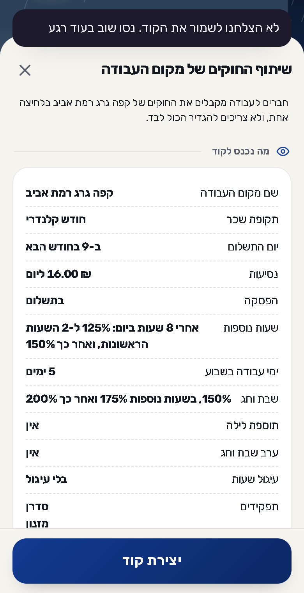
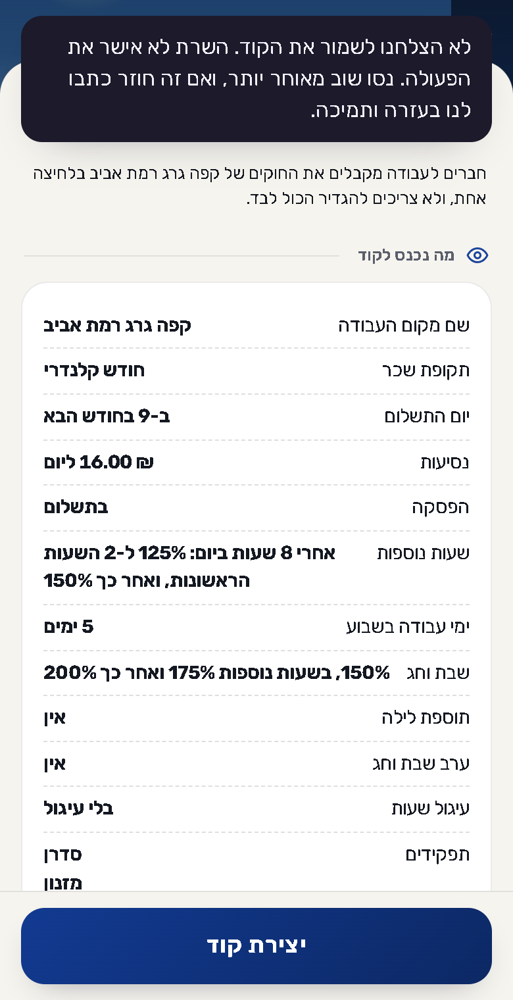
קודם: "נסו שוב בעוד רגע", ושום ניסיון לא יעזור עד שהמכסה מתאפסת. עכשיו: השרת עמוס, לנסות בעוד כמה שעות, ומה ששמרתם נשאר בטלפון.
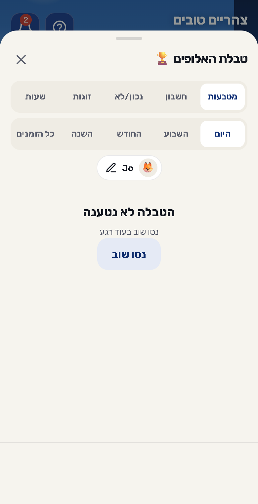
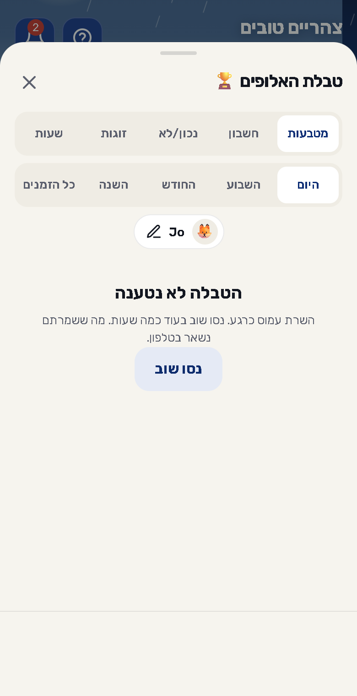
קודם הופיע "הקוד הועתק" גם כשלא הועתק כלום, והמשתמש הדביק ריק. עכשיו נפתח חלון עם הטקסט כבר מסומן, להעתקה ידנית.
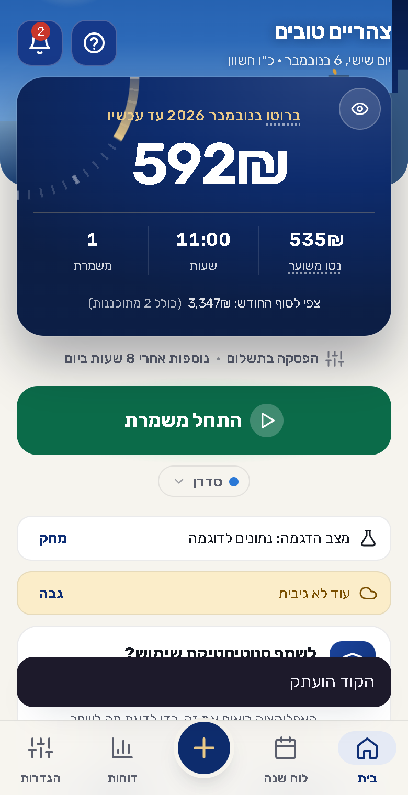
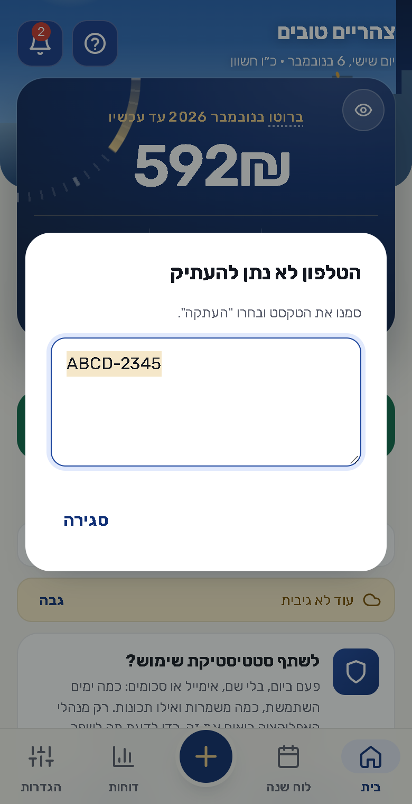
קודם: "לא נמצאו משמרות, נסה לשנות את החיפוש" כשאין שום חיפוש. מבוי סתום. עכשיו: "עוד אין משמרות" וכפתור שפותח הוספת משמרת.
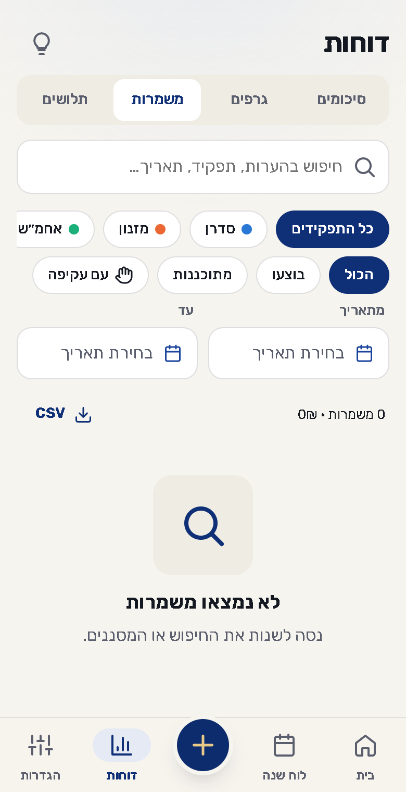
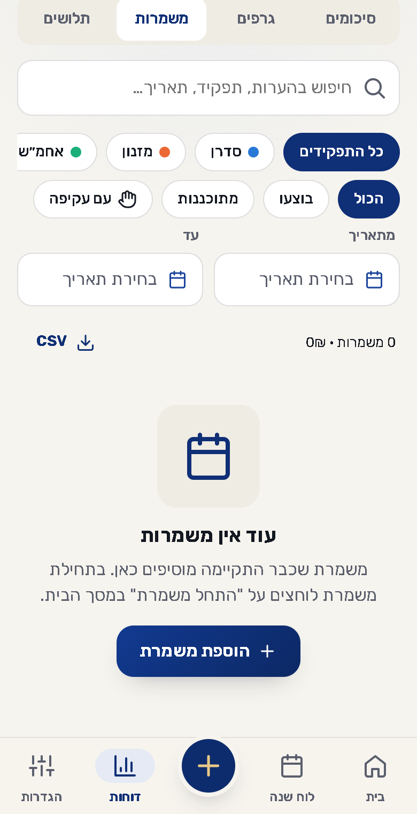
עכשיו יש כפתור אחד שמנקה את החיפוש ואת המסננים, במקום הוראה לשנות אותם לבד.
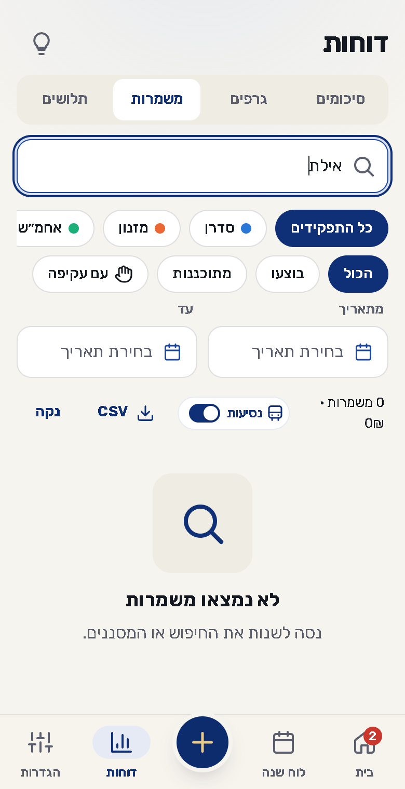
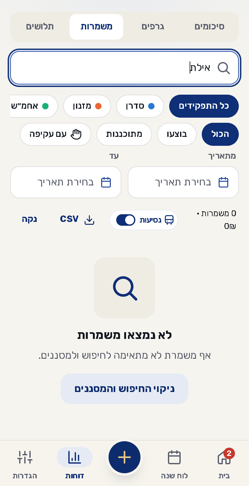
קודם המילה Calendrier נשברה באמצע שורה. עכשיו הכותרת שלמה, וכפתור ההורדה עובר לשורה הבאה רק כשאין מקום.
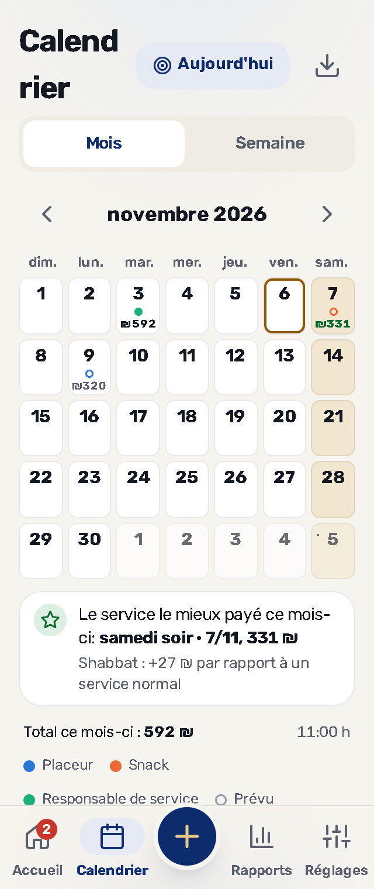
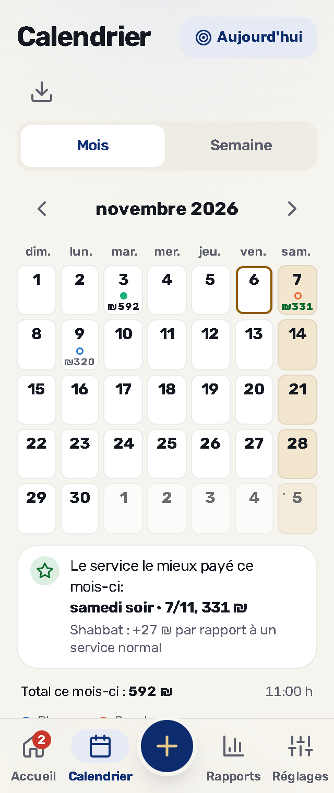
קודם Estimated נשברה ל-Estimate ו-d. עכשיו עמודת השמות רחבה לפחות כמו המילה הארוכה, וכל השורות חולקות את אותן עמודות.
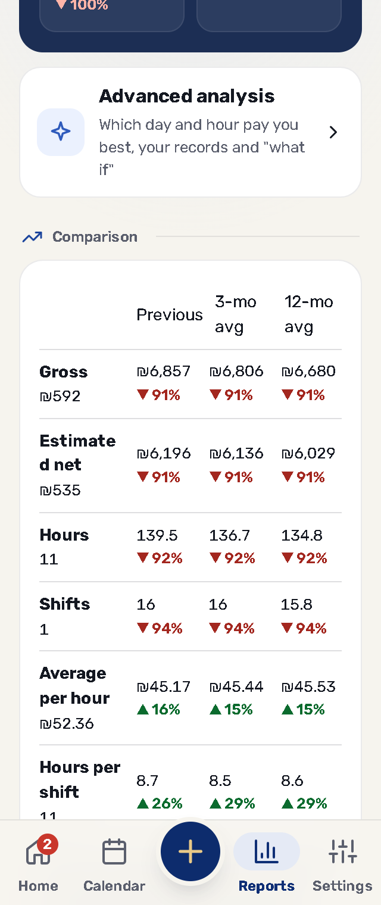
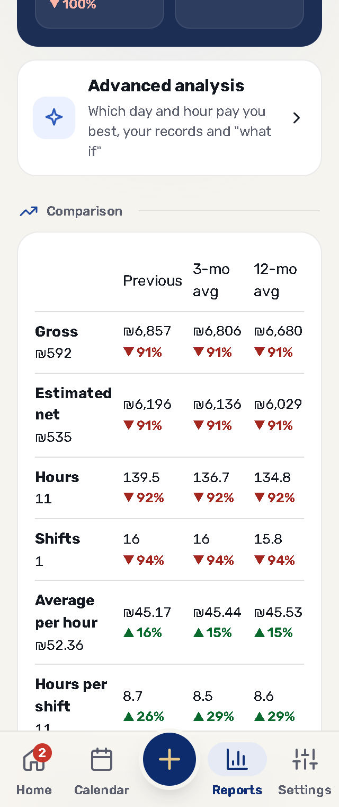
קודם больничный נשברה באמצע. עכשיו אריח לא צר יותר מהמילה הארוכה שבו.
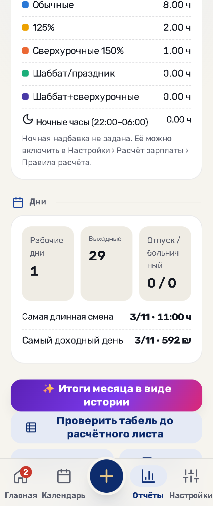
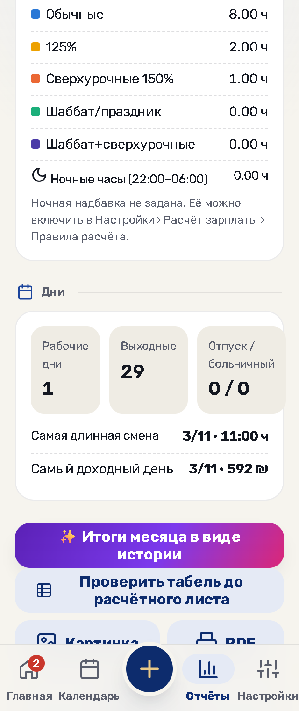